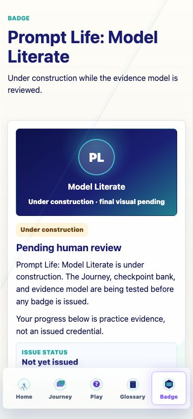
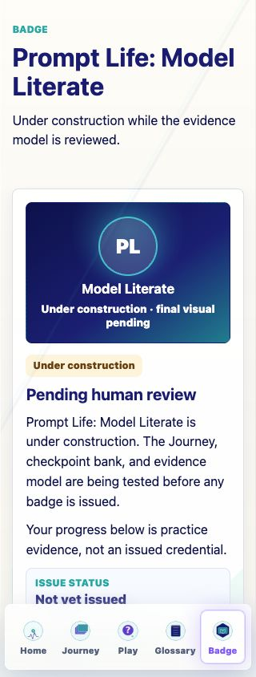
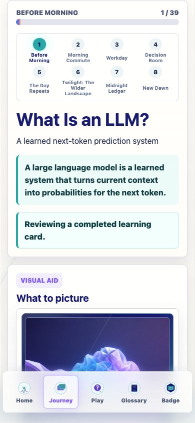

Prompt Life v0.27.12 Badge Under Construction Report
Generated 2026-06-10T04:12:07.533Z. Scope: Badge page status, learner-copy boundary, evidence dashboard, docs, audits, and mobile QA.
39Journey learning cards tracked
136checkpoint questions available
8learning objective categories shown
5Play challenges counted as optional practice history
Result
Prompt Life: Model Literate now remains visible as a single badge concept, but the Badge page clearly says it is under construction, pending human review, and not yet issued. Progress is framed as practice evidence, not an issued credential.
What Changed
Removed learner-facing development notes from lesson, Play, and Badge learner screens, including the visible checkpoint-bank label and Play progress inspector.
Rebuilt the Badge page around status, practice evidence, learning-objective evidence, and draft criteria.
Added a placeholder badge visual panel labeled under construction with final visual pending.
Added docs/DEV_NOTES.md, docs/badge/BADGE_CRITERIA_DRAFT.md, and npm run audit:learner-copy.
Badge Page Wording
Area
Visible wording
Status
Under construction; Pending human review; Not yet issued.
Main note
Prompt Life: Model Literate is under construction. The Journey, checkpoint bank, and evidence model are being tested before any badge is issued.
Evidence caveat
Your progress below is practice evidence, not an issued credential.
Criteria
Criteria are not final.
Evidence Fields
Journey learning cards completed / 39.
Stages completed / 8.
Play challenges completed or reviewed / 5.
Prompt Run steps saved / 13.
Checkpoint questions mastered / 136, with the note that checkpoint mastery tracking is being refined.
Human review status: Pending.
Optional practice attempts, reflections, and last saved Play activity when available.
Learning Objective Categories
Model basics.
Training and inference.
Prompt path.
Context and grounding.
Probability literacy.
Wider landscape.
Risk and myth literacy.
Human-centered use.
Verification
Command / QA
Result
npm run typecheck
Passed.
npm run build
Passed with existing Vite large-chunk warning.
npm run build:pages
Passed with existing Vite large-chunk warning.
npm run audit:answers
Passed.
npm run audit:checkpoints
Passed.
npm run audit:learner-copy
Passed; checked learner-facing source files.
Badge 390px
No forbidden learner-copy hits; no horizontal overflow; under-construction status present.
Badge 320px
No forbidden learner-copy hits; no horizontal overflow; eight objective cards present.
Journey checkpoint 390px
Checkpoint remains visible; question counter shown; no developer bank note.
Home / Play / Glossary smoke checks
No forbidden learner-copy hits and no horizontal overflow at 390px.
Screenshots

Badge at 390px

Badge at 320px

Journey checkpoint at 390px
Known Issues
Checkpoint mastery is not yet persisted as a detailed evidence metric, so the Badge page intentionally does not claim a mastered-question number.
The final badge visual remains pending.
The build still emits the pre-existing large-chunk warning.